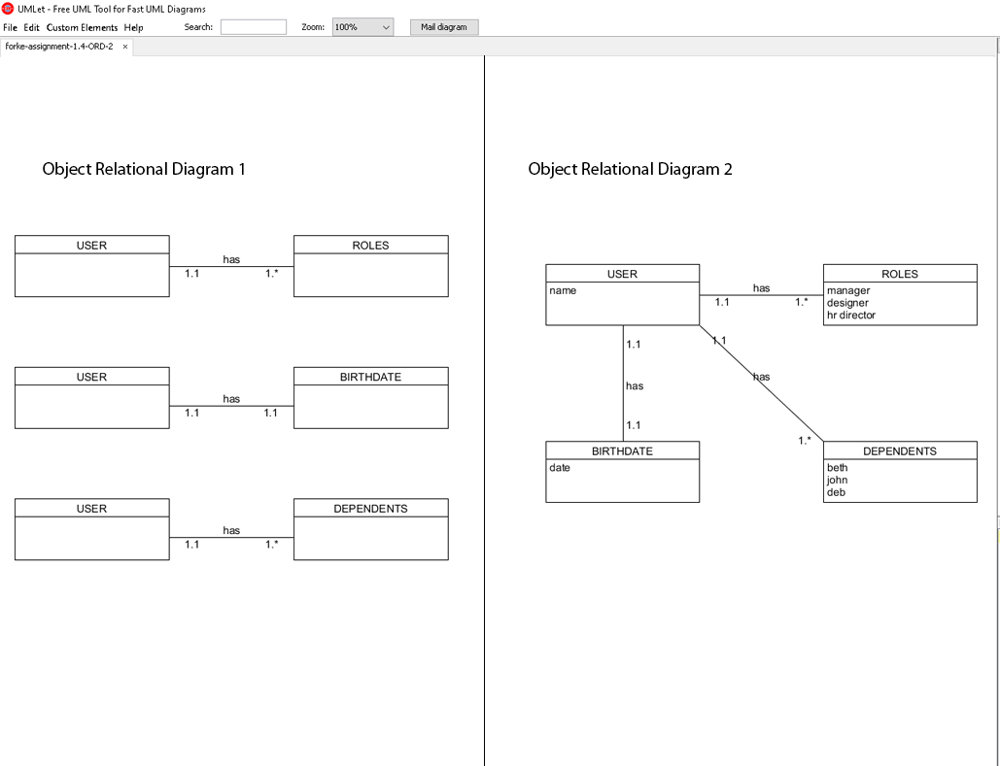
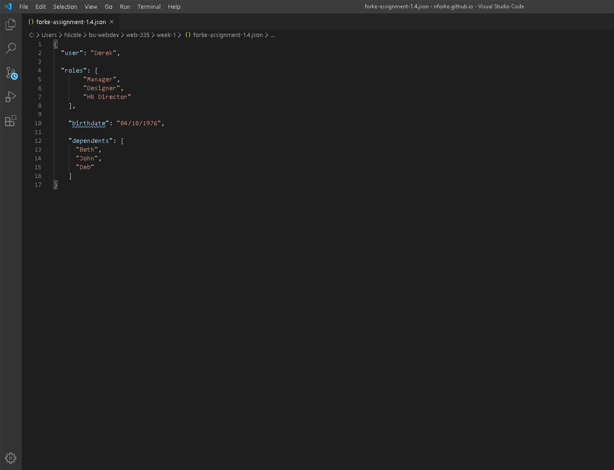
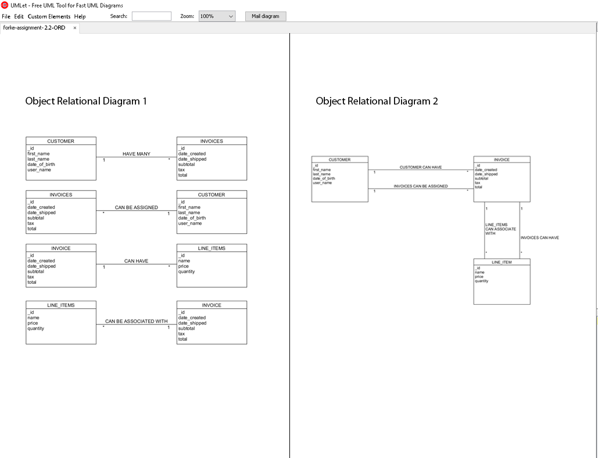
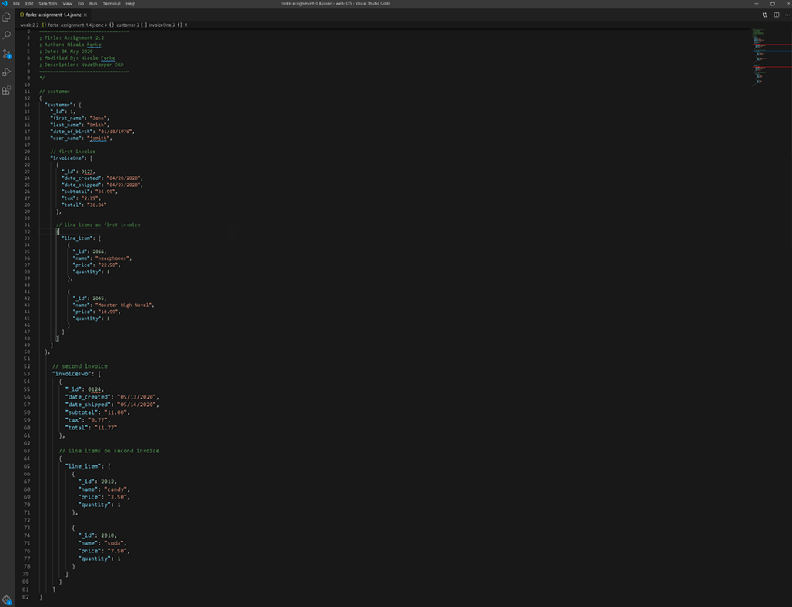
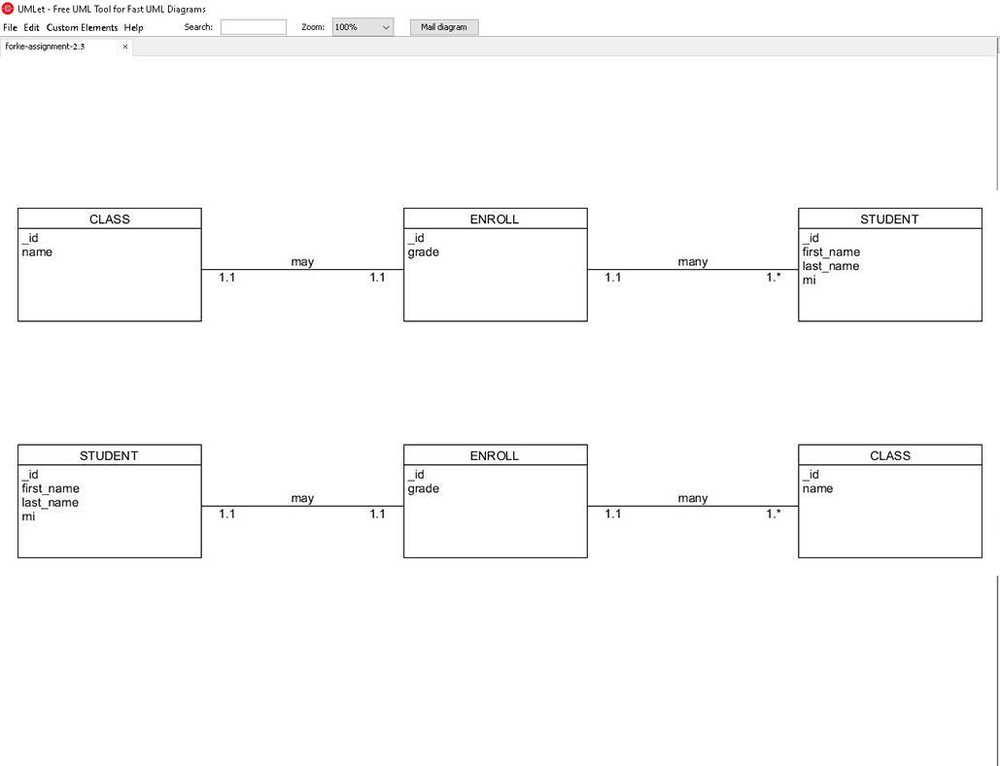
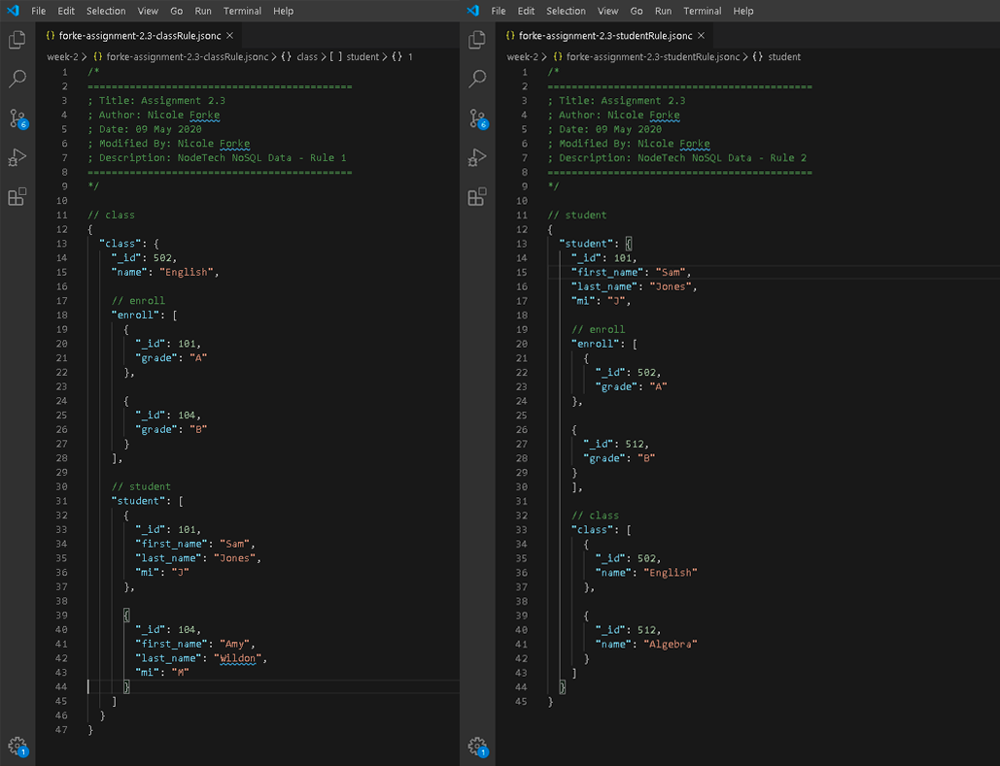
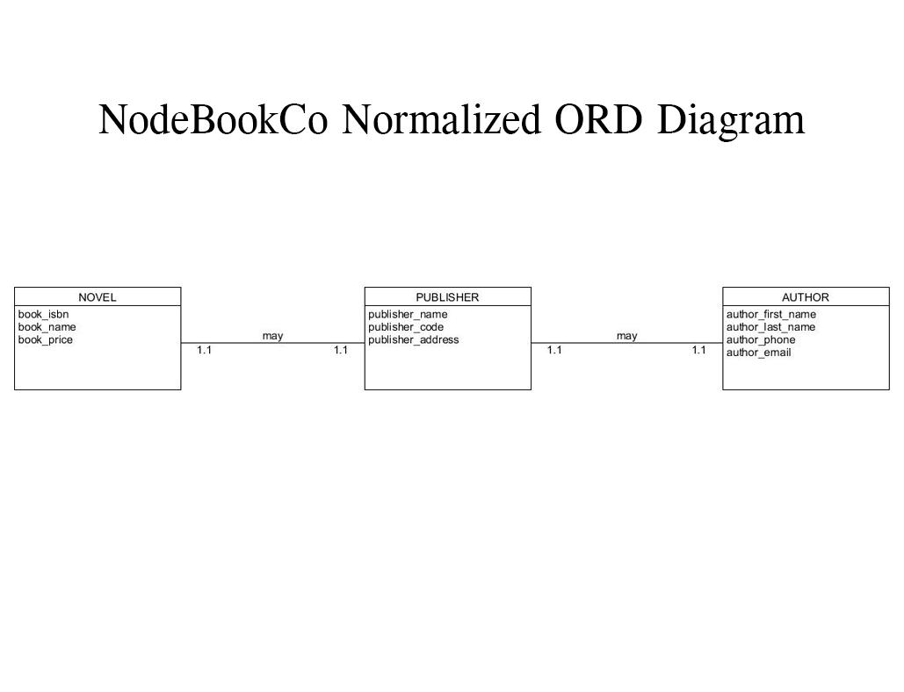
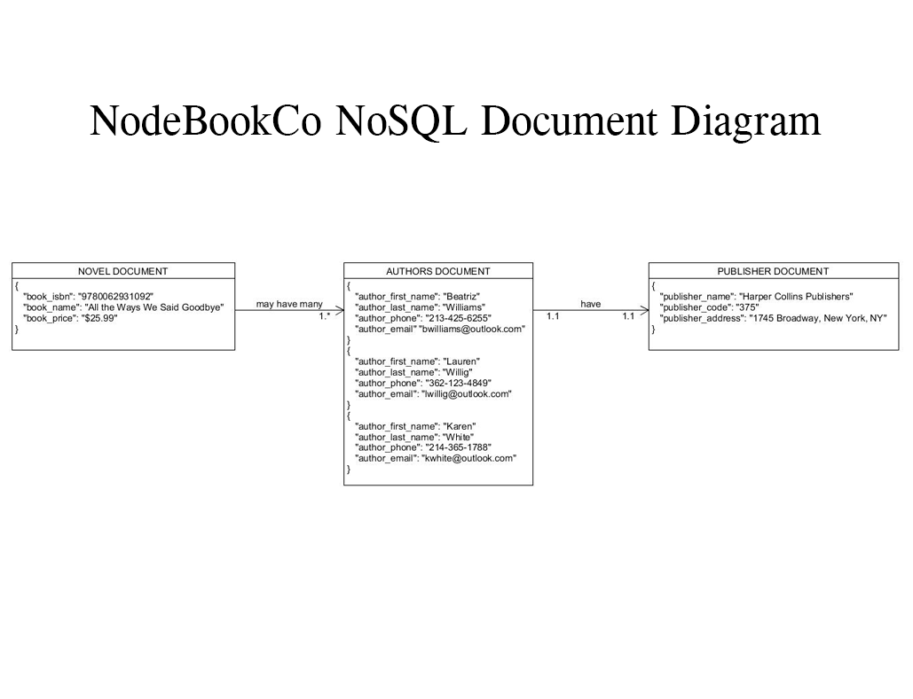
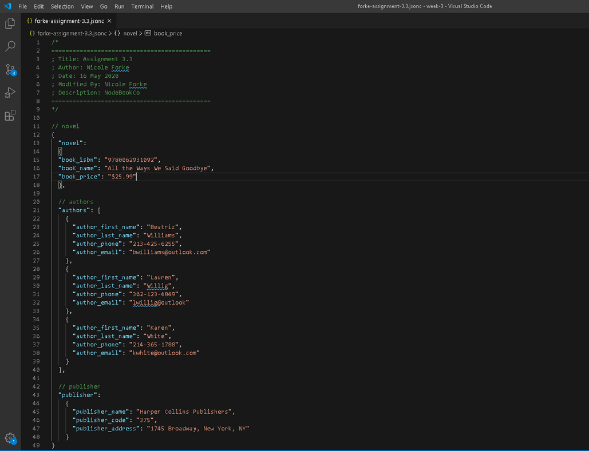

While in Web 335, we were introduced to UMLet. We utilized UMLet for creating Object Relational Diagrams.
We then translated these diagrams into NoSQL data structures. Here you will see some of these diagrams that we
created during class.

This is an image of the Object Relational Diagrams that were created using the following rules.
A person can own many cars, an employee can learn many skills, and an employee manages one restaurant.

This is an image of the NoSQL Data Structure created after
the UMLet Object Relational Diagram using the same rules as the previous ORD diagram.

This is an image of the Object Relational Diagrams that were created in Umlet using the following rules.
A customer can have many invoices, many invoices can be assigned to one customer, an invoice can have many line items and
many line items can be associated with one invoice.

This is an image based off of the same rules and the previous ORD diagram. The NoSQL Data Structure was
created in Visual Studio Code using json.

This is an image of the Object Relational Diagram that was created using Umlet using the following rules.
A class may enroll many students and each student may enroll many classes.

This is an image of two NoSQL Data Structures based off the previous Object Relational Diagram and the same
rules. This was created using Visual Studio Code using json.

This is an image of a normalized ORD diagram created based off data fields given to us by our instructor in Web 335. The
diagram is created using the rules for normalized ORD's using Umlet.

This image was created using Umlet in order to create a NoSQL document diagram based off the normalized ORD diagram previously shown.
After creating these two diagrams we also had to write the business rules based off of them for our Web 335 class.

This is the NoSQL data structure created in Visual Studio Code based off the previous ORD and NoSQL document diagrams.